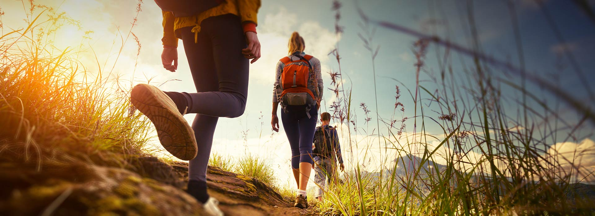
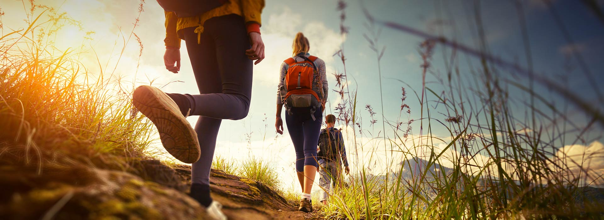

Savour The Unique Experiences
Hiking
Sri Lanka is a unique hiking location. There are trails for all levels of skill, from gentle strolls to strenuous hikes. There are around 400 waterfalls in the nation, which are visited as part of several walks. Have you laced up your walking boots, packed your camera, and applied sunscreen? The top hiking and trekking trails in Sri Lanka are listed here.
Locations For Hiking:
- Path to Little Adam's Peak To Little Adam's Peak Loop from Ella
- Ella Rock 2nd viewpoint To Ella Rock 1st viewpoint Loop from Kithalella
- Small World's End To World's end Loop from Ohiya
Time And Distance
- Path to Little Adam's Peak To Little Adam's Peak Loop from Ella-
Time:02:52
Distance:6.37 Miles - Ella Rock 2nd viewpoint To Ella Rock 1st viewpoint Loop from Kithalella-
Time:06:24
Distance:11.8 Miles - Small World's End To World's end Loop from Ohiya- Time:02:23
Distance:5.20 Miles
 

Rock Climbing
Conquer the mountains of Sri Lanka and feel the rush of crumbling rocks beneath your feet, dizzying heights, and the ground stretching beneath you. The Knuckles Range, Ella Range, Sigiriya , Habarana, Buttala, Horton Plains are just a few of the mountain ranges that stand watch around Sri Lanka's highlands, providing tough climbs for novice and experienced climbers alike. Sri Lanka is a tropical paradise island with several natural rock formations. We have something for everyone, whether you're a novice, a seasoned pro, or somewhere in between. If you've never tried rock climbing before, Sri Lanka is an excellent place to start because there are numerous well-established routes around the nation. Many easy and safe climbing routes are available around the nation, with guides on hand to assist you on your first ascent. Our trained crew will supply you with safety instructions as well as the necessary equipment - harness and helmet - at the starting site. It's time to get the adrenaline pumping once you've secured your grip on the rope. The newest adventure in mountaineering is waterfall climbing, including thrilling climbs such as the granite face of the country's largest waterfall, Bambarakanda.
Read more